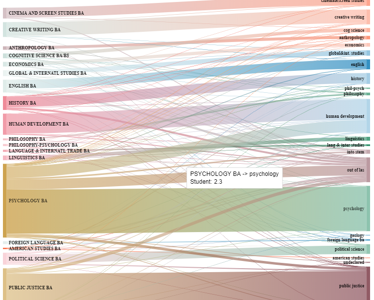

Project Name: Major VS Major Data Visualization
Client: SUNY Oswego: Institutional Research Department
Year: 2017-2018
Project Description: Go to Project
Studying patterns in changes of major is important for resource allocation and planning of advisement and mentoring programs.
We specifically analyzed students who were enrolled in Spring 2017 with a look back at their original major.
We determined that the amount of data gathered for this project required rapid visualization.
The construction of Sankey diagrams using personalized Java code and D3.Js was the perfect solution.
As a result, during the demonstration of the data, viewers are able to conceptualize the information.